① 会社・基本データ
三井ホームは1974年10月11日、三井不動産の住宅部門として設立された日本初の2×4（ツーバイフォー）認定業者。木造住宅のパイオニアとして、ハイグレード帯の洋風デザイン住宅を牽引してきた存在。
| 項目 | 内容 |
|---|---|
| 会社名 | 三井ホーム株式会社（Mitsui Home Co., Ltd.） |
| 設立 | 1974年10月11日 |
| 代表者 | 野島秀敏（代表取締役社長） |
| 本社 | 東京都江東区新木場1-18-6 新木場センタービル（2024年5月に新宿より移転） |
| グループ | 三井不動産グループ（親会社: 三井不動産株式会社） |
| 資本金 | 139億70万円（約139億円） |
| 売上高 | 約2,378億円（2025年3月期・三井ホーム単体） |
| 従業員数 | 2,733名（2026年4月1日時点、三井ホームデザイン研究所を吸収合併後） |
| 年間販売戸数 | 戸建て注文住宅 約3,500〜4,000棟／年（2024年実績） |
| 累計供給戸数 | 注文住宅で累計12万棟超 |
| 対応エリア | 北海道・本州・四国・九州（沖縄は施工対応なし） |
| 上場 | 2018年10月12日に上場廃止（三井不動産のTOB・完全子会社化／当時は東証一部：1868） |
会社の歴史の要点
- 1974年10月11日：三井不動産の住宅部門として三井ホーム株式会社を設立
- 1987年：日本初の木造2×4工法で3階建て住宅を実現
- 1995年：阪神・淡路大震災で2×4住宅の強度が実証
- 2014年：工法名称を「ツーバイフォー工法」から「プレミアム・モノコック構法」に変更
- 2018年10月：三井不動産によるTOBで完全子会社化、東証一部上場廃止
- 2024年2月：木造化技術ブランド「MOCX（モクス）」を発表（戸建〜中大規模木造を統合）
- 2024年5月：本社を新宿から江東区新木場へ移転（創立50周年・木の街集約）
- 2024年10月1日：株式会社三井ホームデザイン研究所を吸収合併（設計技術力強化目的）
- 2024年10月：MOCX WALL工法（壁倍率最大11倍）を戸建住宅に導入
一言で言うと？
「木造ハウスメーカーの中で最高峰のデザイン性と高性能を両立したハイグレード帯の代表格」。
「家は性能」で選ぶ一条工務店、「木の本物志向」で選ぶ住友林業に対し、三井ホームは「憧れの家づくり／洋風デザインの完成度／全館空調スマートブリーズ」という3本柱で選ばれる。三井不動産ブランドの安心感も大きな決め手。
② 商品ラインナップと坪単価
三井ホームは2026年時点で、商品を「ORDER（オーダー／注文住宅）」「PREMIUM（プレミアム）」「SELECT（セレクト／規格住宅）」の3カテゴリに整理している（公式LP基準）。
ORDER（オーダー／自由設計・注文住宅）
フルオーダーの注文住宅カテゴリ。デザインと間取りを一から組み立てるメインライン。
| 商品名 | 主な特徴 |
|---|---|
| Lucas（ルーカス） | 光と吹抜けの開放感。家事動線重視。三井ホームの代表商品 |
| Vance（ヴァンス） | アメリカンテイスト。ゆったりとした空間構成 |
| Sonoma（ソノマ） | 北カリフォルニアの田園スタイル |
| Oakly（オークリー） | 天然木を多用したナチュラルモダン |
| Spanish（スパニッシュ） | スパニッシュコロニアル様式。漆喰壁と素焼き瓦 |
| Tudor Hills（チューダーヒルズ） | 英国チューダー様式の重厚なデザイン |
| Avant Corte（アヴァンコルテ） | 中庭を持つ現代モダン |
| Borderless Modern | 内外の境界を溶かす開放感のあるモダン |
| French Modern | フレンチスタイルのモダン解釈 |
| Skylanai（スカイラナイ） | ラナイ（大屋根テラス）を活かしたリゾート感 |
| Skip Floor | スキップフロアで縦空間を活用 |
| Gran Free（グランフリー） | 大空間・大開口を活かす自由設計 |
| Elegant Modern | エレガントで上質なモダンスタイル |
坪単価目安（ORDER全体）：約83万円〜（公式目安／仕様・商品により変動）
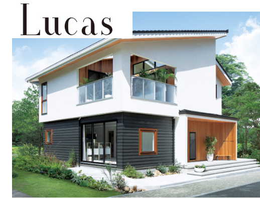
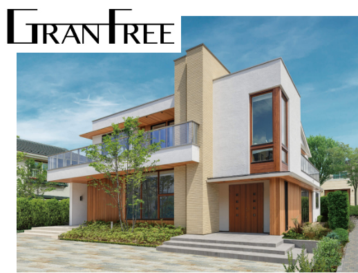
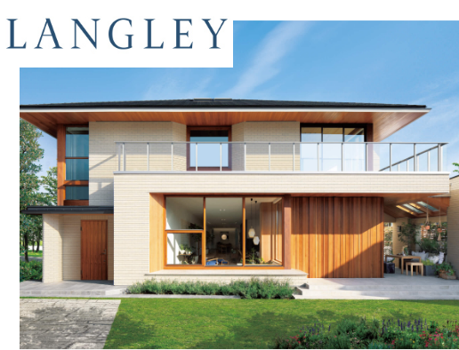
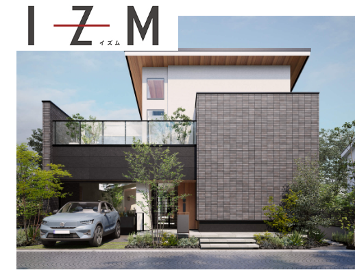
PREMIUM（プレミアム）
上位ハイグレード帯。邸宅級のデザインと仕様を特色とする上位ブランド。
坪単価目安（PREMIUM）：約120万円〜（公式目安）
SELECT（セレクト／規格住宅）
仕様と間取りを固定した規格住宅カテゴリ。コストを抑えたエントリー層向け。
坪単価目安（SELECT）：約76万円〜（公式目安）
坪単価の実態（2026年4月時点）
| データソース | 平均坪単価 | 備考 |
|---|---|---|
| 三井ホーム公式（目安） | 約85〜100万円 | 建物本体のみ |
| 大手比較サイトの平均 | 89.3万円 | 実際に建てた施主の申告ベース |
| SUUMOオーナー口コミ | 115〜130万円 | オプション・外構込み総額ベース |
| 30坪総額実例 | 約3,240万円（坪75.6万円） | LUCAS標準仕様 |
| 35坪総額実例 | 約4,145万円（坪82.8万円） | OAKLY＋スマートブリーズ |
| 40坪総額実例 | 約4,900万円（坪85.8万円） | 上位商品（PREMIUM帯）＋デザインスタジオ |
坪単価は「建物本体価格」のみ。外構・照明・カーテン・地盤改良・諸費用は別途。実質的な総額は「坪単価 × 坪数 × 1.25〜1.35」が現実的な目安。
③ 構造・工法（プレミアム・モノコック）
プレミアム・モノコック構法（2×6ツーバイシックス拡張）
三井ホームの代名詞。一般的な2×4（ツーバイフォー）より38mmも厚い6インチ（140mm）の構造材を壁に使うことで、強度・断熱性が大幅に向上。さらに三井ホームオリジナルの独自部材を組み合わせることで「最新枠組壁工法」として差別化している。
2×4（一般）：構造材厚 89mm（断熱材充填可能量 89mm）
2×6（三井ホーム）：構造材厚 140mm（断熱材充填可能量 140mm → 約57%アップ）
4つのオリジナル構造部材
| 部材名 | 役割 | 特徴 |
|---|---|---|
| DSP（ダブルシールドパネル） | 屋根 | EPS芯材を広葉樹OSBで挟む複合パネル。断熱＋2.4トンの荷重に耐える強度を両立 |
| BSW（ブロック・アンド・シームレスウォール） | 外壁 | 通常2×4より50mm厚い壁。シームレスで連続した外壁により気密・断熱に貢献 |
| TF（トラスフロア） | 床 | トラス構造の床で大スパン確保。配管スペースも一体化 |
| MS（マットスラブ） | 基礎 | ベタ基礎＋外周部高強度設計。不同沈下・液状化対策 |
モノコック構造のしくみ
- 床・壁・天井の6面体が一体となり、建物全体で外力を受け止め分散する
- 特定の柱・梁に力が集中しないため、変形・倒壊に強い
- スペースシャトル・新幹線・F1マシンにも採用されている構造原理
- 最大開口幅4.55m・最大天井高さ2.9m・最大連続窓2.7mまで可能
MOCX WALL工法（2024年10月導入）
従来のプレミアム・モノコック構法の上位版として2024年に新導入。壁倍率を最大11倍まで引き上げ可能にした次世代構造システム。耐震等級3をさらに上回る余裕ある構造設計が可能になった。
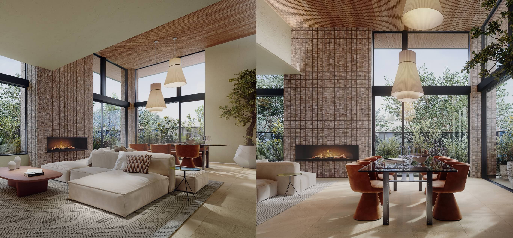
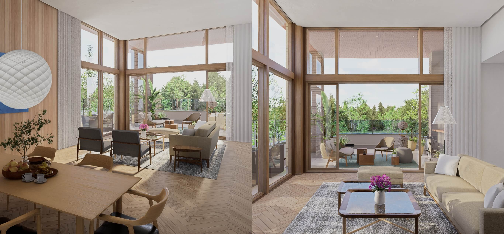
| 項目 | 従来2×6 | MOCX WALL |
|---|---|---|
| 壁倍率 | 最大5倍程度 | 最大11倍 |
| 対応商品 | 全商品 | 2024年10月以降の新規契約物件で順次導入 |
| 開口部 | 標準 | より大開口が可能 |
耐震性能
| 項目 | 内容 |
|---|---|
| 耐震等級 | 3（最高等級）標準取得可能 |
| 壁倍率 | 従来工法で最大5倍／MOCX WALLで最大11倍 |
| 実大実験 | 国立研究開発法人 土木研究所の実大震動実験施設で、震度7×連続60回加振に耐えた実績あり（2016年） |
| 実験結果 | 2016年7月に2階建てプレミアム・モノコックGで震度7を12種類60回、合計16種類65回連続加振。最大加速度5,115galで大きな損傷なし |
| 火災耐久 | 2時間耐火構造認定（木造3階建て）取得 |
耐震実大実験の詳細
三井ホームは1995年の阪神・淡路大震災以降、繰り返し実大耐震実験を実施。2016年には国立研究開発法人 土木研究所（つくば市）の実大震動実験施設で、プレミアム・モノコック構法の大規模加振実験を行った。
- 2016年6月：3階建て実験棟で震度7相当を29回加振
- 2016年7月11-13日：2階建てプレミアム・モノコックGで、震度7を12種類60回、合計16種類65回の連続加振を実施。最大加速度5,115gal（世界観測史上最大値4,022galを超える）を記録したが、構造に大きな損傷なし
耐震等級3は「消防署・警察署など防災拠点と同等の耐震性」。三井ホームの2×6＋MOCXでは「等級3＋α（余裕度）」を実現しており、繰り返し震度7でも家族と財産を守れる強度を持つ。
他社との耐震性能比較
| HM | 工法 | 耐震等級 | 実験条件 |
|---|---|---|---|
| 三井ホーム | 2×6＋MOCX WALL | 等級3 | 土木研究所(2016年)で震度7×60回連続でも被害なし |
| 一条工務店 | 2×6ツインモノコック | 等級3（全棟） | 震度7×253回加振実験 |
| 住友林業 | ビッグフレーム構法 | 等級3 | 震度7×60回加振 |
| 積水ハウス（シャーウッド） | モノコック＋シーカス | 等級3 | 実大実験あり |
④ 断熱性能
| 項目 | 内容 |
|---|---|
| 断熱等級 | 6（標準仕様）／最高等級7対応（MOCX THERMOシリーズ） |
| UA値（標準） | 0.39 W/㎡K以下（標準・断熱等級6） |
| UA値（green's ZERO） | 0.46 W/㎡K |
| UA値（MOCX THERMO） | 0.26 W/㎡K（断熱等級7達成） |
| 外壁断熱 | BSW工法で140mmの高性能断熱材充填（通常2×4の約1.57倍） |
| 屋根断熱 | DSP（ダブルシールドパネル）＋アテストモ235mm相当 |
断熱構成の詳細
| 部位 | 断熱材 | 厚さ（標準） |
|---|---|---|
| 外壁 | 高性能グラスウール or 硬質ウレタンフォーム | 140mm |
| 屋根 | DSP（EPS複合パネル）＋天井断熱 | 235mm相当 |
| 床 | 高性能グラスウール | 140mm |
| 窓 | Low-Eペア または トリプル樹脂サッシ（上位商品） | - |
断熱等級別の商品対応
| 断熱等級 | 達成商品 | 仕様 |
|---|---|---|
| 等級5（ZEH基準） | 全商品標準 | 標準的な断熱仕様 |
| 等級6 | 標準仕様で達成（UA値0.39以下） | 標準＋α |
| 等級7 | MOCX THERMOオプション | UA値0.26相当。トリプルサッシ必須 |
2×6工法のため「構造上断熱層を厚くしやすい」メリットがある一方、一条工務店の「外内ダブル断熱（合計190mm）」には数値では及ばない。三井ホームは標準仕様で断熱等級6（UA値0.39以下）を達成しており、MOCX THERMOオプションで等級7（UA値0.26）まで引き上げ可能。
⑤ 気密性能
| 項目 | 内容 |
|---|---|
| C値（公式値） | 非公表（全棟測定は行っていない） |
| 社内目標値 | 約1.0〜2.0 cm²/m²（業界推定） |
| 気密測定 | 希望者のみ有償で実施可能 |
気密性能の実態
- 三井ホームはC値（相当隙間面積）を公式に公表していない。これは業界の多くのHMと同じ姿勢
- 2×6工法＋BSWのため「構造上は比較的気密が取りやすい」が、施工精度に依存するため個体差が出る
- 施主ブログでは実測値としてC値0.5〜1.5程度の報告が散見されるが、保証値ではない
- 全館空調スマートブリーズの効果を最大化するには気密1.0以下が望ましいため、希望者はオプションで気密測定を依頼することを推奨
他社との気密比較
| HM | C値（公表データ） | 全棟測定 |
|---|---|---|
| 一条工務店 | 0.59（全棟平均） | 全棟実施 |
| アイ工務店 | 0.5以下 | 全棟実施 |
| スウェーデンハウス | 約0.7前後 | 実施 |
| 三井ホーム | 非公表 | 希望者のみ |
| 住友林業 | 非公表 | 希望者のみ |
| 積水ハウス | 非公表 | 実施せず |
ARCHIST視点：気密性能（C値）に強いこだわりがある方は、三井ホームでは事前確認が必須。測定オプションを入れるか、他社（一条・アイ工務店・スウェーデンハウス）との比較検討を。
⑥ 換気・全館空調スマートブリーズ
換気システム
| 項目 | 内容 |
|---|---|
| 換気方式 | 第1種換気（熱交換型）＝スマートブリーズとして提供 |
| 熱交換率 | 約80〜90%（モデルによる） |
| 花粉・PM2.5対応 | 高性能フィルターで99%以上カット |
| 全館空調との統合 | 換気＋冷暖房＋除加湿を1システムで実現 |
三井ホームの換気システムは「スマートブリーズ」に統合されているのが特徴。一般的なHMでは換気と空調が別システムだが、三井ホームは一体化することで24時間全館の温度・湿度・空気質を管理する設計思想。
全館空調「スマートブリーズ」
三井ホームの最大の差別化要素。1台の空調システムで家全体を快適な温度・湿度に保つ。
3つのラインナップ（2026年4月時点）
| モデル | 対象 | 導入費用 | 特徴 |
|---|---|---|---|
| スマートブリーズ エース | 超大型住宅 | 300〜400万円 | 最上位。個別温度制御・除加湿フル機能 |
| スマートブリーズ プラス | 40坪以上 | 200〜280万円 | 主力。全室個別温度設定・高効率熱交換 |
| スマートブリーズ ワン | 40坪以下 | 130〜170万円 | 壁掛けエアコン活用型。廉価版 |
メリット
- 家全体で温度差がない：廊下・トイレ・洗面所も常時同じ温度。ヒートショックリスクが大幅低減
- 花粉・PM2.5対策：高性能フィルターで室内の空気質が常に清浄
- 育児・介護世帯に好評。アレルギーや高齢者対策に効果大
- 10年保証：エアコン本体・熱交換器ユニット・搬送ファンはメーカー保証規定内で10年間、何度でも無料修理
デメリット・注意点
- メンテ費用が継続：フィルター交換1,500〜5,000円／年、メンテ契約約2万円／年、10年目以降のダクト清掃10〜30万円
- 電気代：冬季（1〜2月）30坪で月約2万円。年間トータルで一般エアコンより月5,000〜1万円高め
- カビ問題：梅雨・多湿地域ではダクト内カビ発生の報告あり
- 導入コストが高い（100〜400万円の追加）
- 電気代・メンテ負担を理由に2〜3年でエアコンに切り替える事例も
スマートブリーズ ワンの特徴（2026年主流）
- 壁掛けエアコンを活用するためメンテナンス契約が不要
- エアコン交換時も一般製品に置き換え可能で将来的なリスクが小さい
- 価格も150万円前後と手頃
- ただし個別温度制御はプラス/エースより弱い
⑦ デザイン
三井ホームの最大の強みの一つ。特にヨーロピアン・アメリカン系の洋風デザインが得意で、他のハウスメーカーにはないデザイン力を持つ。
デザインの特徴
- 外観：レンガ調外壁・塗り壁・白い外壁 × 緑の芝生のような「映える外観」
- 内装：アーチ型開口・アイアン系アクセント・吹抜け・大開口など「映画に出てくる家」テイスト
- カラーコーディネート：独自の「彩工房」システムで専門家が配色・素材を提案
- 外部設計士との連携：自社設計だけでなく、著名建築家とのコラボ事例も多数
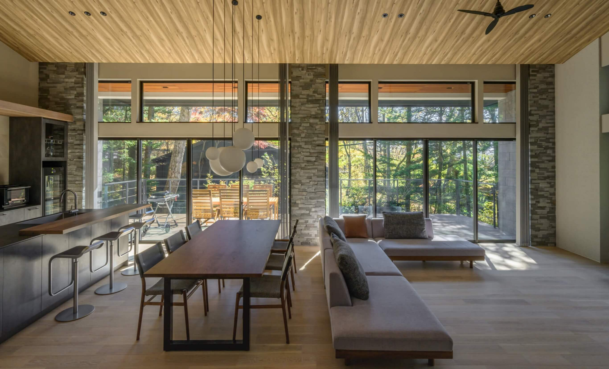
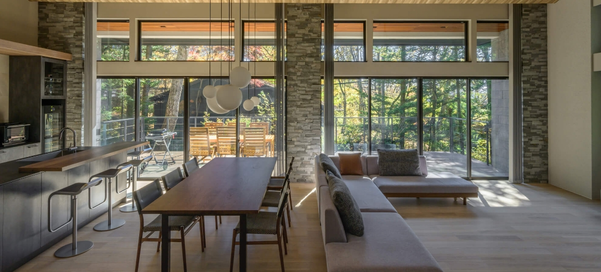
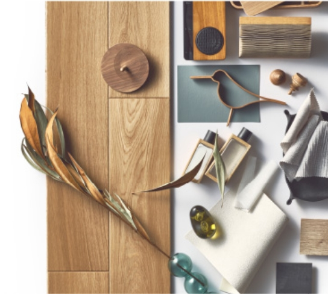
三井ホーム デザインスタジオ
上位商品（PREMIUMカテゴリ等）では「三井ホームデザインスタジオ」の専任デザイナーがプランニングを担当。通常の設計士とは別枠で、より個別性の高い提案を受けられる。
デザインスタジオの対応範囲は東京・大阪・名古屋など主要都市に限定されており、地方エリアでは利用できない場合がある（ARCHISTの愛知県エリアでは名古屋拠点で対応可能）。
グッドデザイン賞受賞歴
三井ホームは2012年以来ほぼ毎年グッドデザイン賞を受賞している。注文住宅・施設建築・マンション部門で多数受賞。2025年度も7プロジェクトが受賞しており、デザイン業界からの評価は安定的に高い。
- 2012年：3プロジェクト受賞
- 2013年：都内初の「ツーバイフォー木造耐火建築（5階建て）」で受賞
- 2014年：3プロジェクト受賞
- 2025年：三井不動産グループ住宅部門として26年連続受賞（グループ合計7プロジェクト）
SNS映えポイント
- Instagramで「#三井ホーム」投稿数は累計10万件以上
- 施主アカウントで建築過程を公開する「#三井ホーム施主」コミュニティが活発
- 他HMと比べて写真の見栄えが良く、雑誌・YouTube・Pinterestでの露出も多い
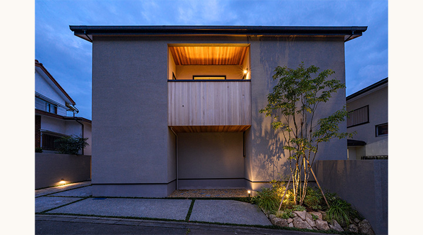
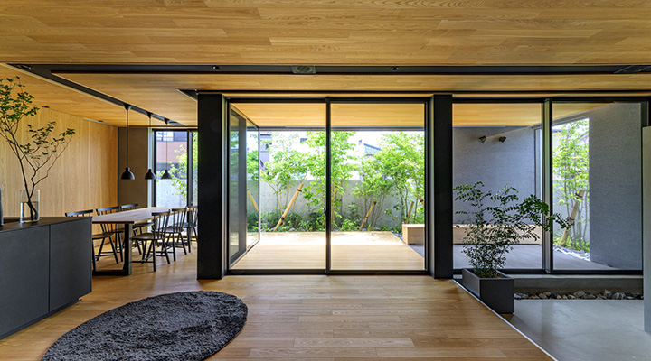
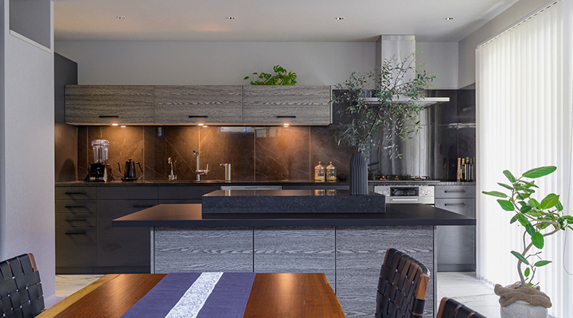
ZEH・省エネ対応
| 項目 | 内容 |
|---|---|
| ZEH対応 | 全商品でZEH仕様を選択可能 |
| ZEH比率（2024年度） | 約60〜70%（年間販売の過半数） |
| green's ZERO | ZEHを超える「家電込みで電気代ゼロ」を実現したフラッグシップモデル |
| 断熱等級7 | MOCX THERMOで対応可能 |
| 太陽光発電 | オプション搭載（ZEH取得時は必須） |
| 蓄電池 | オプション対応（容量5〜15kWh） |
green's ZERO（グリーンズゼロ）の特徴
三井ホームが2020年に発表した「LCCM（ライフサイクルカーボンマイナス）住宅」のフラッグシップ。
- 特徴：家電込みの消費電力を太陽光発電が上回る設計
- UA値：0.46 W/㎡K（業界最高水準を謳う公式値）
- 標準装備：太陽光発電9〜13kW＋蓄電池＋HEMS
- 追加コスト：通常プランより+300〜500万円
- 補助金：LCCM住宅で国の補助金最大140万円
⑧ 保証・アフターサービス
| 保証項目 | 期間 | 条件 |
|---|---|---|
| 初期保証（構造・防水） | 10年 | 法律上の義務 |
| 延長保証 | 最長60年 | 10年ごとに有償点検・メンテナンスを実施 |
| シロアリ保証 | 5年（初期）／延長可 | 5年ごとに防蟻処理を有償で実施 |
| 定期点検 | 6ヶ月・1年・2年・5年・10年・以降10年ごと | 無料点検 |
| 全館空調保証 | 10年（エアコン本体・熱交換器等） | スマートブリーズ採用時 |
延長保証の詳細
三井ホームの60年保証は「条件付き」である点に注意が必要。
10年目：初期保証終了 → 有償メンテ（30〜80万円）
20年目：第1次延長保証終了 → 有償メンテ（50〜120万円）
30年目：第2次延長保証終了 → 有償メンテ（70〜150万円）
…最長60年まで10年ごとに有償点検を継続
費用目安の実情
- 10年目：屋根・外壁のメンテが中心で30〜80万円
- 20年目：防水・設備更新で50〜120万円
- 30年目以降：構造的な補修も入り100万円超のケースも
- 60年間のトータル：概算300〜600万円のメンテ費用がかかる想定
他社との保証比較（60年保証系）
| HM | 初期保証 | 延長最大 | 特徴 |
|---|---|---|---|
| 一条工務店 | 30年（構造） | 30年 | シロアリ予防10/20年目無償 |
| 住友林業 | 30年 | 60年 | 長期優良住宅取得で延長 |
| 積水ハウス | 30年 | 永年 | ユートラスシステムで永続延長 |
| ヘーベルハウス | 30年 | 60年 | ロングライフ思想 |
| 三井ホーム | 10年 | 60年 | 有償点検で延長 |
| タマホーム | 10年 | 60年 | 長期優良住宅取得で延長 |
三井ホームの初期保証は業界標準の10年で、延長は「有償メンテが条件」。積水ハウスの永年保証と比べると延長コストがかかるため、長期の維持費用を事前にシミュレーションすることが重要。
値引き・価格交渉
| 項目 | 内容 |
|---|---|
| 一般的な値引き幅 | 5〜10%（ただし商品・タイミングで変動） |
| 決算期 | 3月・9月に値引きが出やすい |
| 他社競合 | 住友林業・積水ハウスとの相見積もりで交渉余地 |
| 紹介割引 | オーナー紹介で3〜5%の割引あり |
| オプションサービス | 値引きできない分、オプションをサービス品として付ける商談手法 |
値引き交渉のコツ
- 決算期を狙う：3月・9月は営業担当の数字意識が強まるため値引きが出やすい
- 他社の相見積もりを持参：住友林業・積水ハウス・スウェーデンハウスが有効
- モデルハウス購入・売約済み物件：モデルハウス払下げは定価の20〜30%オフで出ることも
- オプションのサービス化：「値引きは厳しいがスマートブリーズをサービス」「カーテン・照明一式サービス」等
- 契約後の追加オプションに注意：値引き分を「打合せで追加オプションを入れる」ことで実質相殺する営業手法もある
「削ると上乗せ」「打合せごとに値上がり」の事例：最初の見積もりでは予算内だったが、仕様確定の度に金額が積み上がり最終的に500万円以上増えるケースが多い。
対策：契約前に「坪単価に含まれる仕様」を文書で明確化し、オプション追加の都度、金額をその場で確認すること。
⑨ 建築期間
| フェーズ | 期間目安 |
|---|---|
| 展示場見学〜仮契約 | 1〜3ヶ月 |
| 仮契約〜本契約（詳細打合せ） | 4〜6ヶ月 |
| 本契約〜着工（確認申請・詳細設計） | 2〜3ヶ月 |
| 着工〜上棟 | 1〜1.5ヶ月 |
| 上棟〜引渡し | 3〜5ヶ月 |
| 合計（初回来場〜引渡し） | 11〜18ヶ月 |
| 着工〜引渡し | 4〜6ヶ月 |
工法による工期の特徴
- 2×6枠組壁工法は壁パネルを工場である程度プレハブ化するため、在来軸組より現場工期が短め
- 天候による工程遅延が比較的少ない（軸組木造より屋根が早く架かるため）
- ただしヨーロピアン系の外装（塗り壁・レンガ）は現場仕上げで時間がかかるため、デザインによっては工期が延びる
他社比較
| HM | 着工〜引渡し | 備考 |
|---|---|---|
| 一条工務店 | 4〜6ヶ月 | 工場生産で安定 |
| 住友林業 | 6〜9ヶ月 | 自由設計で長め |
| 三井ホーム | 4〜6ヶ月 | 2×6プレハブで標準的 |
| 積水ハウス | 5〜7ヶ月 | 鉄骨は早い |
| ヘーベルハウス | 5〜7ヶ月 | ALC組立で安定 |
⑩ 客層・向き不向き
典型的な施主プロファイル
| 属性 | 傾向 |
|---|---|
| 年齢 | 35〜50代（他HMより高め） |
| 世帯年収 | 1,200〜2,000万円が中心 |
| 最低年収目安 | 世帯年収900万円〜（SELECT等規格型なら700万円〜） |
| 職業 | 医師・弁護士・経営者・大企業管理職・資産家が多い |
| 価値観 | デザイン・ブランド・洋風住宅・全館空調への憧れ |
| 情報収集 | 雑誌「モダンリビング」「住まいの設計」「Casa BRUTUS」等を読むタイプ |
三井ホームが刺さる典型的な顧客像
- 「おしゃれで洋風の家を建てたい」「映画に出てくるような家に住みたい」
- 子どもの喘息・アレルギー対策・花粉症対策で全館空調スマートブリーズに興味がある
- 三井ブランドへの信頼感・安心感を重視
- デザインに予算を掛けられる余裕がある
- 中部地区よりも関東・関西・九州エリアに多い（愛知県は中堅シェア）
向いている人
- 洋風・映える外観にこだわる
- 全館空調で温度差ゼロを目指したい
- 三井不動産ブランドの安心感を重視
- 予算坪85〜110万円を確保できる
- グッドデザイン賞の受賞実績を評価する
向いていない人
- 気密値（C値）にこだわりたい（→一条・アイ工務店・スウェーデンハウス）
- とにかく価格を抑えたい
- 間取りの自由度を最優先したい（2×6は壁配置に一定制約）
- 無垢材・天然木の温もりを求める（→住友林業）
- 和風住宅を建てたい
⑪ 他社との比較表
| 項目 | 三井ホーム | 住友林業 | 積水ハウス（SW） | スウェーデンハウス | 一条工務店 | ヘーベルハウス |
|---|---|---|---|---|---|---|
| 坪単価目安 | 85〜110万 | 90〜130万 | 95〜130万 | 90〜120万 | 80〜105万 | 90〜120万 |
| 工法 | 木造2×6（MOCX） | 木造BF構法 | 木造モノコック | 木造2×4＋木製サッシ | 木造2×6 | 鉄骨ALC |
| UA値 | 0.39（標準・等級6） | 0.46 | 0.60 | 0.38 | 0.25 | 0.55〜0.60 |
| C値 | 非公表 | 非公表 | 非公表 | 0.7前後 | 0.59（全棟） | 非公表 |
| 耐震等級 | 3 | 3 | 3 | 3 | 3（全棟） | 3 |
| 全館空調 | ◎スマートブリーズ | △（オプション） | △（オプション） | × | ◎（床暖房標準） | × |
| 初期保証 | 10年 | 30年 | 30年 | 10年 | 30年 | 30年 |
| 保証最大 | 60年 | 60年 | 永年 | 50年 | 30年 | 60年 |
| 向く人 | 洋風・ブランド | 木の温もり | 大手安心 | 北欧・気密 | 性能特化 | 都市型・耐火 |
三井ホーム vs 住友林業（木造高級HM対決）
| 比較軸 | 三井ホーム | 住友林業 |
|---|---|---|
| 工法 | 2×6＋MOCX WALL（枠組壁工法） | ビッグフレーム構法（太い柱の軸組） |
| デザイン性 | 洋風（ヨーロピアン）に特化 | 和モダン・無垢木に強み |
| 木の使い方 | 構造材と内装の一部 | 構造材＋床・造作にも無垢を多用 |
| 全館空調 | スマートブリーズが強い | オプション対応（弱い） |
| 坪単価 | 85〜110万 | 90〜130万（高め） |
| 選び方 | 「洋風・白いレンガ・吹抜け」派 | 「和モダン・無垢床・大開口」派 |
三井ホーム vs 積水ハウス シャーウッド
| 比較軸 | 三井ホーム | 積水ハウス シャーウッド |
|---|---|---|
| 工法 | 木造2×6＋MOCX | 木造シャーウッド（MJ-Wood） |
| ブランド力 | 三井不動産グループ | 業界最大手の安心感 |
| 保証 | 60年（有償延長） | 永年（ユートラス） |
| リセール | ○ | ◎（最高水準） |
| 選び方 | デザイン・全館空調重視 | 最大手の安心・資産価値重視 |
三井ホーム vs スウェーデンハウス
| 比較軸 | 三井ホーム | スウェーデンハウス |
|---|---|---|
| 工法 | 2×6＋MOCX WALL | 2×4＋木製3層サッシ |
| デザイン | ヨーロピアン全般 | 北欧テイスト特化 |
| 気密・断熱 | 中〜高 | 非常に高い（UA値0.38） |
| 窓 | 樹脂or樹脂アルミ | 木製3層ガラス標準 |
| 顧客満足度 | オリコン8位 | オリコン12年連続1位 |
| 選び方 | 洋風＋全館空調＋大手安心 | 北欧・木製窓・圧倒的な満足度 |
オリコン顧客満足度でスウェーデンハウスが12年連続1位であることは重要な事実。「ブランド性能より顧客満足度重視」ならスウェーデンハウスも有力選択肢。
三井ホーム vs 一条工務店（性能vsデザイン）
| 比較軸 | 三井ホーム | 一条工務店 |
|---|---|---|
| 断熱性能（UA値） | 0.39（標準・等級6） | 0.25（業界トップ） |
| 気密（C値） | 非公表 | 0.59（全棟測定） |
| デザイン自由度 | ◎ | △（一条ルール） |
| 全館空調 | スマートブリーズ | 全館床暖房＋ロスガード90 |
| 坪単価 | 85〜110万 | 80〜105万 |
| 選び方 | デザイン・ブランド重視 | 性能・光熱費特化 |
⑫ よくある後悔・失敗事例
後悔1：想定以上のコスト増
「坪単価85万円で契約したのに、打合せごとにオプションが積み上がり最終的に坪110万円相当になった」。スマートブリーズ・太陽光・内装グレードアップ・デザインスタジオ料金が主な上振れ要因。
契約前に「坪単価に含まれる標準仕様」を文書で明確化。追加オプションは都度書面で金額確認。
後悔2：全館空調のメンテ費用と電気代
スマートブリーズのフィルター交換・定期点検で年間2〜3万円。冬季（1〜2月）の電気代が30坪で月2万円超。10年目以降のダクト清掃で10〜30万円の追加費用。
導入前に10年間のトータルコスト（本体＋メンテ＋電気代）を試算すること。
後悔3：契約後の営業対応の変化
「契約前は丁寧だったのに、契約後の連絡が遅くなった」「打ち合わせの回数制限があり、追加打ち合わせが有料になった」。
契約前に営業担当・設計担当・現場監督の役割分担を確認。打ち合わせ回数の制限を書面化。
後悔4：カビ問題（全館空調）
スマートブリーズで室内が常に一定温度に保たれる一方、梅雨・多湿地域ではダクト内カビ発生報告。特に日本海側・西日本の多湿エリアで報告が多い。
年1回のダクト点検を契約。湿度管理用の除湿機能（ワン以外）を検討。
後悔5：2×6工法で間取りの制約
「大開口の窓を取りたかったのに壁倍率の制約で不可能だった」「リビングと隣室を繋ぐ大きな開口が希望通りに取れなかった」。
MOCX WALL工法（壁倍率11倍）は2024年10月以降の新規契約物件で順次導入。大開口を希望する場合は商品選定時に確認。
後悔6：デザインスタジオの地域差
「憧れのデザインスタジオに依頼したかったが、地方エリアでは対応外だった」「名古屋拠点だが、東京本社の著名デザイナーには依頼できなかった」。
事前に対応エリア・デザイナーの指名可否を確認。愛知県は名古屋拠点で対応。
後悔7：外構費用の過小見積り
本体工事費には外構・地盤改良・引越しは含まれない。外構の相場は200〜300万円（三井ホームはデザイン性重視のため他社より高め）。
外構は複数業者に相見積もり。提携外業者も検討。
後悔8：10年目以降のメンテ費用
初期10年保証は標準だが、以降の延長保証は有償メンテが条件。10年目の点検・メンテで30〜80万円、20年目で50〜120万円が目安。60年トータルで300〜600万円のメンテ費用想定。
契約時に「60年保証の総コスト」を見積り依頼。他HMと比較。
⑬ 顧客満足度データ・坪数別総額・固有の注意点
オリコン顧客満足度ランキング（ハウスメーカー 注文住宅）
| 年度 | 三井ホームの総合順位 | スコア | 備考 |
|---|---|---|---|
| 2024年 | 8位前後 | 76点台 | |
| 2025年 | 8位前後 | 76点台 | |
| 2026年 | 総合8位 | 76.6点 | 12年連続1位はスウェーデンハウス（81.0点） |
2026年のランキング上位5社（参考）
| 順位 | HM名 | スコア |
|---|---|---|
| 1位 | スウェーデンハウス（12年連続1位） | 81.0 |
| 2位 | ヘーベルハウス | 78.9 |
| 3位 | 住友林業 | 78.7 |
| 4位 | 積水ハウス | 78.3 |
| 5位 | 一条工務店 | 77.6 |
| 8位 | 三井ホーム | 76.6 |
三井ホームの個別評価（2026年）
| 評価項目 | スコア | コメント |
|---|---|---|
| 価格の納得感 | 2,000〜3,000万円未満で1位 | 中価格帯では高評価 |
| 安全性能 | 高評価 | 耐震・耐火で上位 |
| 外観・内観デザイン | 高評価 | デザイン性は業界トップクラス |
| 設計力 | 高評価 | デザインスタジオが強み |
| 快適性能 | 高評価 | 全館空調の効果 |
| アフターサービス | 中評価 | 地域差・担当者差の報告あり |
坪数別の建築総額シミュレーション（LUCAS基準）
※ LUCAS（人気No.1商品）を基準。2026年4月時点の概算。土地代は含まない。
30坪（約99m²／3〜4人家族の標準）
| 項目 | 金額目安 |
|---|---|
| 本体工事費（坪85万円） | 約2,550万円 |
| 付帯工事費・諸経費（20%） | 約510万円 |
| 外構費 | 約200〜280万円 |
| スマートブリーズ ワン | 約150万円 |
| 建築総額目安 | 約3,410〜3,490万円 |
| 月々返済額（35年・金利1.5%） | 約10.5〜10.7万円 |
35坪（約115.5m²／ゆとり4人家族）
| 項目 | 金額目安 |
|---|---|
| 本体工事費（坪85万円） | 約2,975万円 |
| 付帯工事費・諸経費（20%） | 約595万円 |
| 外構費 | 約250〜300万円 |
| スマートブリーズ プラス | 約250万円 |
| 建築総額目安 | 約4,070〜4,120万円 |
| 月々返済額（35年・金利1.5%） | 約12.5〜12.7万円 |
40坪（約132m²／5人家族／二世帯の片方）
| 項目 | 金額目安 |
|---|---|
| 本体工事費（坪85万円） | 約3,400万円 |
| 付帯工事費・諸経費（20%） | 約680万円 |
| 外構費 | 約300〜350万円 |
| スマートブリーズ プラス | 約280万円 |
| 建築総額目安 | 約4,660〜4,710万円 |
| 月々返済額（35年・金利1.5%） | 約14.4〜14.5万円 |
上位商品を選んだ場合の総額増
| 商品 | 坪単価加算 | 30坪での総額増 |
|---|---|---|
| MOCX WALL仕様（壁倍率11倍対応） | +5〜10万/坪 | +150〜300万円 |
| PREMIUMカテゴリ上位商品 | +10〜35万/坪 | +300〜1,050万円 |
| green's ZERO（LCCM仕様） | +15〜25万/坪 | +450〜750万円 |
上記は土地代を含まない建物のみの金額。地盤改良が必要な場合は別途50〜150万円。太陽光発電10kW追加で+200〜300万円、蓄電池7kWh追加で+150〜200万円、デザインスタジオ料金で+30〜100万円。SELECT（規格型・坪単価76万円〜）を選べばORDER比で総額を抑えられる。愛知県エリアは全国平均よりやや地価・建築費が低い傾向。
三井ホーム固有の注意点
2×6工法のコスト面
- 2×6工法は2×4より構造材のコストが約1.3〜1.5倍
- BSW・DSP等のオリジナル部材を使うため、同じ木造でも在来軸組より坪単価は10〜15万円高い
- 「木造なのに高い」という印象を持たれるが、構造上は鉄骨系HMに近いコスト構造
デザインスタジオ制度の地域差
| エリア | デザインスタジオ対応 |
|---|---|
| 東京・神奈川 | ◎（本社デザインスタジオ・著名建築家指名可） |
| 大阪・京都 | ○（関西拠点対応） |
| 名古屋 | ○（中部拠点対応。愛知県はここ） |
| 福岡 | ○（九州拠点対応） |
| その他地方 | △（通常の設計士対応。デザインスタジオは限定的） |
ARCHIST視点（愛知県向け）：名古屋拠点の三井ホーム デザインスタジオが利用可能だが、東京本社の著名建築家は対象外。地域拠点のデザイナー力を事前に確認すること。
外壁材のメンテナンス注意
- 三井ホームはモルタル吹付け・塗り壁仕上げが標準的な外壁
- 10〜15年で塗り替え・再塗装が必要（100〜200万円）
- レンガ・タイル仕上げのオプションを選べば耐久性が向上するが+50〜150万円
- 長期居住なら外壁材のグレードアップを推奨
契約後の打合せ回数制限
- 三井ホームは契約後の打合せ回数に制限がある（商品により5〜10回）
- 追加打合せは1回あたり3〜5万円の有料オプション
- 対策：契約前の「仮契約〜本契約」期間で仕様を9割以上固める
シロアリ対策
- 5年保証（初期）／5年ごとの有償防蟻処理で延長
- 一条工務店の10年目・20年目無償防蟻と比べると弱い
- 木造のためシロアリリスクは鉄骨系より高め
- 対策：10年ごとに定期防蟻処理の予算を計上（1回15〜25万円）
上場廃止（非公開化）の影響
- 2018年10月12日に三井不動産のTOB（公開買付価格980円）で完全子会社化され、東証一部（当時）から上場廃止
- IR情報の開示が限定的になり、詳細な決算データは外部から見えにくい
- ただし経営の安定性は三井不動産グループの支援で向上している
- 親会社の三井不動産は東証プライム上場企業（コード: 8801）
⑭ よくある質問（FAQ）＆まとめ
三井ホームは本当に高いですか？
値引きはどのくらい可能ですか？
スマートブリーズは絶対に必要ですか？
三井ホームの気密値（C値）は公表されている？
坪単価85万円の三井ホームで30坪なら総額は？
三井ホームと住友林業はどちらが良いですか？
三井ホームと一条工務店はどちらが良いですか？
三井ホームとスウェーデンハウスはどちらが良いですか？
三井ホームは地震に強いですか？
スマートブリーズはカビが生えると聞きましたが？
三井ホームの60年保証は本当ですか？
三井ホームは愛知県で建てられますか？
三井ホームの坪単価はどのくらい上がっていますか？
三井ホームは上場企業ですか？
三井ホームとARCHISTの関係は？
まとめ：三井ホームはどんな人におすすめか
- 洋風デザインの完成度が業界トップ：グッドデザイン賞ほぼ毎年受賞。ヨーロピアン・アメリカン系に特化した建築ノウハウ
- 全館空調スマートブリーズ：家じゅう温度差ゼロの快適性。ヒートショック・花粉症・アレルギー対策に効果大
- 三井不動産ブランドの安心感：親会社が東証プライム上場の不動産最大手。長期の経営安定性
- 2×6プレミアム・モノコック構法＋MOCX WALL：耐震等級3＋α。震度7×60回連続でも損傷なしの実績
- 気密（C値）は公式非公表。数値重視派には不安
- 初期保証は10年と業界内では短め。延長は有償条件
- 契約後のオプション追加で総額が大きく上振れしやすい
- 2×6工法のため大開口・間取り自由度に一定の制約（MOCX WALLで緩和）
- デザインスタジオは地域差あり。愛知県は名古屋拠点対応
こんな人に強くお勧め
「おしゃれで洋風の家を建てたい」「全館空調で温度差のない暮らしをしたい」「三井不動産ブランドの安心感がほしい」という方には強力な選択肢。予算は坪単価85〜110万円（総額3,500〜5,000万円）を確保できるのが前提。
ARCHISTとしての推奨アクション
- 予算が気になる場合：SELECT（規格型・坪76万〜）またはLucas標準仕様で総額を抑える。スマートブリーズ ワン（150万円）で全館空調のエントリー版を検討
- 価値を最大化したい場合：MOCX WALL仕様（壁倍率11倍・大開口可）＋スマートブリーズ プラス、デザインスタジオ指名（愛知県は名古屋拠点）
- 他社と比較検討したい場合：洋風デザイン比較なら住友林業（和モダン）・スウェーデンハウス（北欧）、全館空調比較なら積水ハウス（エアシーズン）・一条工務店（床暖房）、顧客満足度比較ならスウェーデンハウス（12年連続1位）